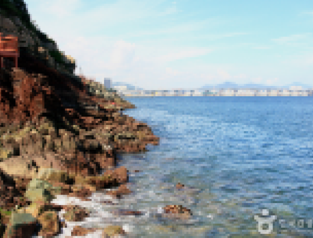
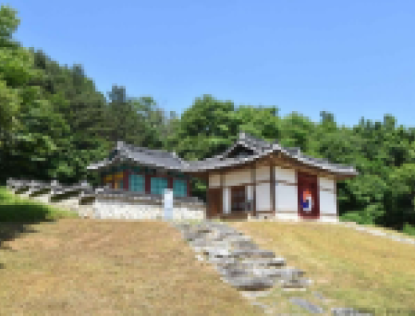
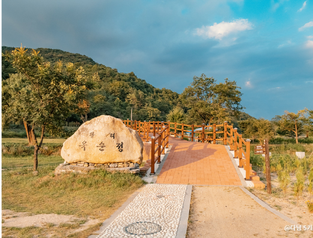
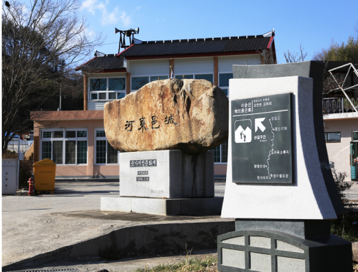
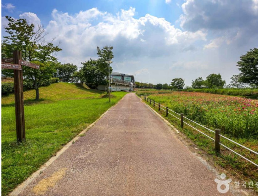

길벗
길을 함께 가는 동무, 같은 길을 가는 사람
로그인
교통정보
내 일정
#전체
#울산
#경남
#서울
#세종
#전북
#부산
#경기
#전남
#대구
#강원
#제주
#인천
#충북
#광주
#충남
#대전
#경북
#전체
총
39,200
건
최신순
거리순
인기순

부산 암남공원
부산 서구
# 2024 #걷기길 #관광지 #바다풍경 #암남공원 #부산
도심에서 보기 힘든 자연생태가 군락을 이루고 있는 곳
경기 양평군
#관광지 #역사 #역사공부 #역사관광지 #역사를품은곳 #역사속
학문과 덕행을 추모하기 위해 창건한 서원

운계서원(양평)
경기 양평군
#관광지 #슬로시티수산 #옥순봉 #제천가볼만한곳 #충북권
푸르른 자연과 다양한 체험이 어우러진 공간

옥순봉생태공원
경남 하동군
#관광지 #하동가볼만한곳 #하동석축성 #하동여행 #하동읍성
하동에서 떠나는 과거여행

하동읍성
광주 서구
#관광지 #광주 #광주권 #광주여행코스 #라이딩투어
영산 5경을 만나는 라이딩 투어

양산강 자전거길